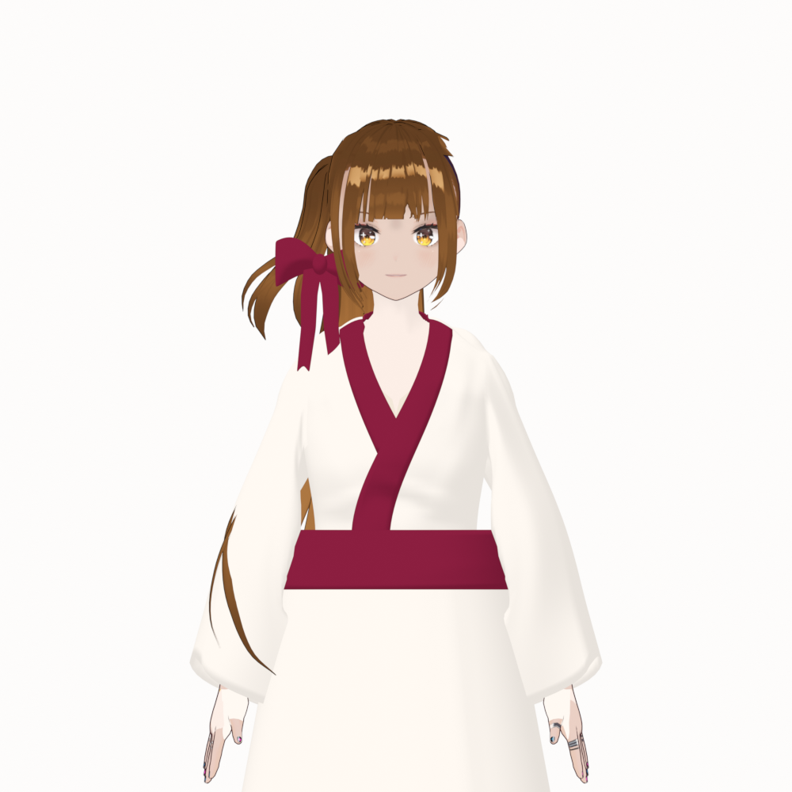

2/2 lượt · Khuyến nghị FAIL · Chờ người dùng xemKagari — sửa eo và cổ–vai
Eo sạch hơn trên ảnh trước/3/4, cổ gáy bớt nhô. Số tam giác giữ nguyên. Vẫn còn giao nhau cục bộ và nếp rủ dưới nách chưa đạt; đây là bản WIP sau hai lượt sửa, chưa được duyệt mỹ thuật.
Blender v2 · Lượt 1 · Full v3 gốc · Báo cáo tiếng Việt · Kiểm tra
Đọc ảnh cùng kiểm tra bề mặt:Không còn các mảng kem cắt vào đai rõ như trước, nhưng kiểm tra tìm thấy 13 đoạn crossing tay áo–đai và 87 đoạn cổ–áo trong pose lưu. Những số này không phải số lỗi độc lập hay diện tích giao nhau. Vai và dưới nách vẫn có khối túi tròn. Tóc lỗi được giữ nguyên theo phạm vi nhiệm vụ.
Đối chiếu cùng camera
Full concept v3 · Trước · pose lưu
Recovery v2 · Trước · pose lưu Bấm ảnh để mở PNG gốc. Clay dùng cùng góc nhìn, màu xám và thiết lập studio. Màu dùng lại shader/lighting của source; không thêm vật liệu. Pose nâng tay +30° và tay ngang là pose rig tĩnh, chưa phải mô phỏng vải hay animation.
Kết quả và điểm dừng
Face/morph, Hair, Body, rig rest và pose lưu khớp sau mở lại; connectivity, UV, weights và modifier của garment được bảo toàn. Bốn garment: 20.105 raw / 41.908 evaluated triangles; object bật render: 47.434 / 118.773, không tăng so với full v3.
Phương án tạo hình điều khiển và skinning cố định vẫn chưa giải quyết ổn định tiếp giáp cổ–vai, khoảng hở các lớp và độ rủ khi đổi pose. Dừng sau hai lượt, khuyến nghị FAIL cho recovery tổng thể. Không sửa tóc/mặt, không tạo turnaround, không trang trí và không xuất VRM.
garment-geometry-recovery-v2 · SHA256: 9006f5c03019ad0fd4aeeeba1c97b2a30e96f65ac1b8fa0d9093000664017d6d